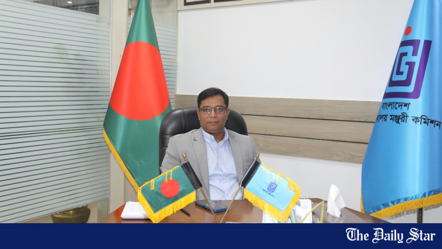

UGC drafting rules for foreign univ campuses here
The University Grants Commission is drafting a policy to allow selected foreign universities to set up campuses in Bangladesh, as local private universities call for a level playing field.